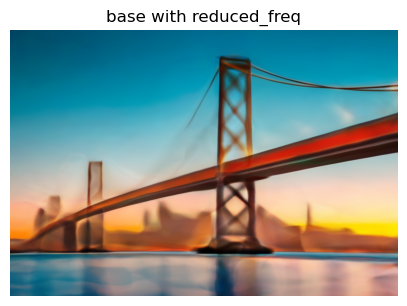
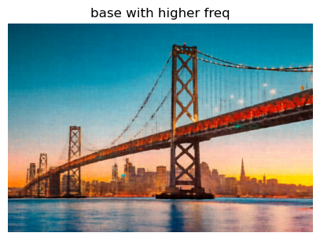
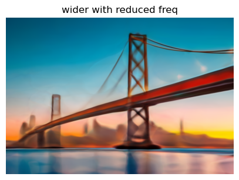
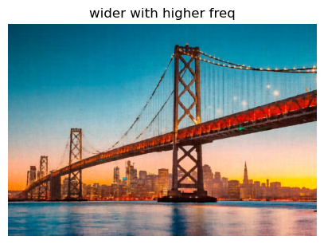

Part 2.3: Putting the dataloader all together
In this step, confirmed all my functions were implemented correctly by visualising the rays coming out of each image.

In this part, I created my own dataset to train with NeRF. First I calibrated my camera using ArUco tags, then captured a 3D scan of my object and used the intrinsics matrix I got from calibration to estimate the pose of the camera for each image of my object. Below is a visualization of my camera frustums.
I needed to fit a neural field that maps 2D pixel coordinates to RGB color values which I did by implementing a multi-layer perceptron with the following architecture:
The model is four layers deep, with the first three having output dimension size 256 and the last having output dimension size
3 which corresponds to the three RGB channels.
Hyperparameters:
Number of iterations = 2000
Learning rate = 0.01
Optimizer = Adam
Positional Encoding Frequency was varied between 3 and 10 in hyperparamter tuning.
Channel size was varied between 256 and 512 in hyperparameter tuning.
I experimented with different hyperparameters to see how the results were affected. I tested out changing the positional
encoding frequency and the channel size. I found that for the fox image, the best configuration was the one with L=10 and
channel size = 256. The images below represent iterations 1, 20, 100, 500, 1000, 2000 during training.
For my own image, I trained my model on a picture of the Golden Gate bridge, and found that the best configuration was the one with a wider channel size of 512 and L = 10.
The final results for the different hyperparameters while training the image of the golden gate bridge are:
| L=3 | L=10 | |
|---|---|---|
| Channel Size 256 |  |  |
| Channel Size 512 |  |  |
To render the 3D scene, I built a set of functions that map pixel locations into 3D rays, each defined by an origin (ro) and a normalized direction (rd). The system first converts pixel coordinates into camera coordinates using the intrinsic matrix, then maps them into world coordinates through the camera-to-world transform. The ray origin is taken directly from the camera’s translation component, while the ray direction is obtained by normalizing the vector from this origin to the world-space position of a point at unit depth. All coordinate conversions and ray computations are implemented using batched matrix multiplications for efficiency.
To make training efficient, I precomputed and flattened all rays and their RGB values once at initialization. During training, I sampled batches of random rays by selecting random images and random pixels within them, and for validation I retrieved all rays from a single image to render full outputs. I also implemented point sampling along each ray to obtain the 3D coordinates used by the NeRF model to learn scene geometry and appearance.
In this step, confirmed all my functions were implemented correctly by visualising the rays coming out of each image.
I implemeted a deep neural network that handles higher dimensional inputs such as the 3D position and direction vectors and outputs the RGB and density associated with the inputs.

Volume rendering computes the final pixel color by integrating the contributions of all sampled points along a ray. For each point, the network outputs both a color and a density value, and these are combined using a discretized form of the volume rendering equation. The method accumulates color from back to front, using the predicted densities to determine opacity and the transmittance along the ray to weight each contribution. Distance intervals between consecutive samples (δᵢ) are also used to approximate how much each point contributes to the final rendered pixel.
I trained on the lego dataset using:
learning rate 1e-3
2000 iterations
batch size= 10,000, with 64 samples per ray
near=2, far=6
Below are images of the training process. I ended up with a validation PSNR higher than 24.
.jpg)
.jpg)
.jpg)
.jpg)
.jpg)
.gif)
In this part, I used my own custom dataset to render a novel view of my object which is a miniature oud I got from Egypt!
I had to change some of the hyperparameters for this to match my data.
Changed Hyperparameters:
batch size=5000
near = 0.02, far = 0.5
Learning rate = 5e-4
I used the same number of iterations(2000) and number of samples per ray (64) as 2.5.
Below are some intermediate renders of the scene during training
.jpg)
.jpg)
.jpg)
.png)
.jpg)
.gif)